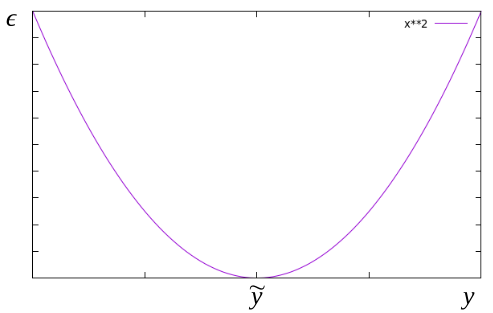
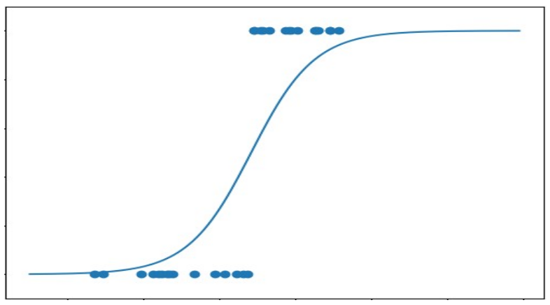
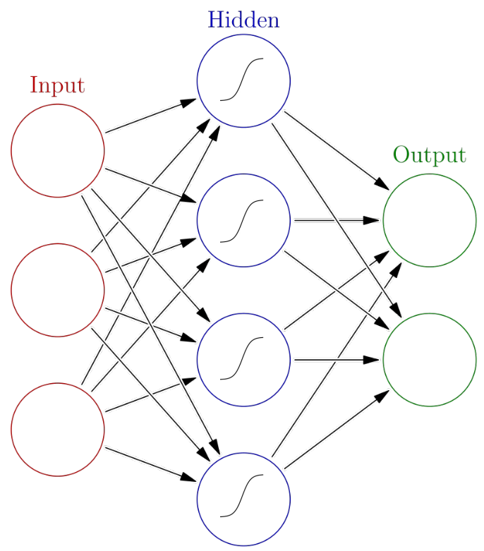
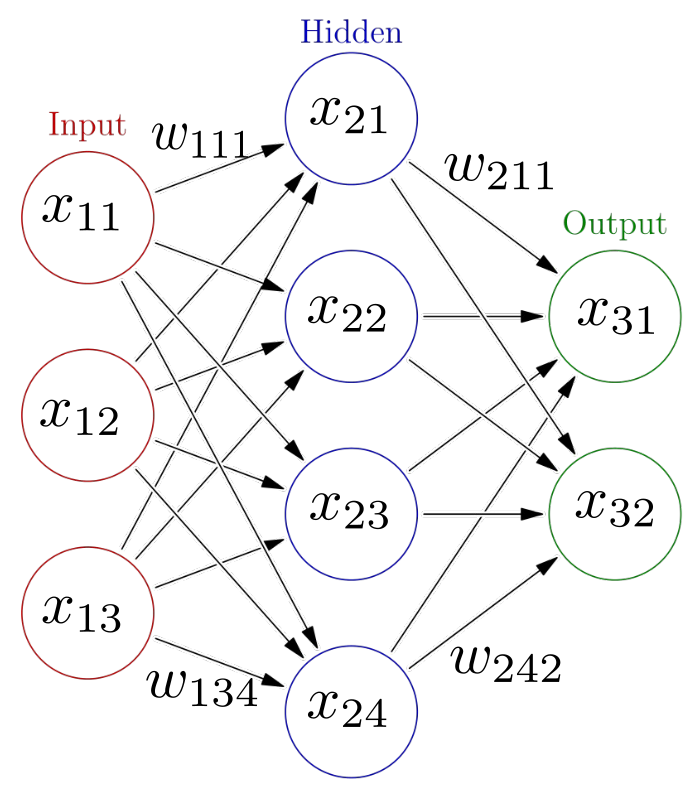
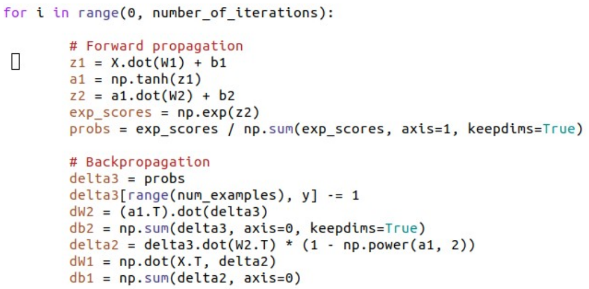

Introduction to machine learning
2021
Dr. Rene Staritzbichler
Machine learning
What is machine learning?
Optimization of mathematical model by usage of data
- Aliases:
- 'pattern recognition'
- 'data mining' (evaluation)
- Goals:
- explain data
- predict data
Tasks
- discrete data: classification
- continuous data: regression
- complexity reduction
- encryption
Main classes
Discrete data:
| good | bad |
| alive | dead |
| having disease X | not having disease X |
Continuous data:

Basic mathematical principle
- a basic mathematical function
- a deterministic relation or law of nature, e.g. F = ma
- a more complex mathematical function
- outcome depends on inner parameters
- machine learning is the optimization of inner parameters
$y = f(x)$
$y = f(x,c), \qquad \text{where c are free inner parameters} $
What is learning?
\[\begin{aligned}
M(\boldsymbol{X}) & = y_{pred} \\
\epsilon & = \sum_{i=1}^{n} ( y_{pred, i} - y_{known, i} )^2 \\
\boldsymbol{X} & \in \mathbb{R}^{n \times m} \\
y_{pred/known} & \in \mathbb{R}^{n \times k}
\end{aligned} \]
learning is the minimization of the error between known and calculated values.
Definitions
- X: input data matrix
- columns: m features, e.g. age, weight, size, ...
- rows: n samples, e.g. patients
- ypred: calculated output
- continuous: probability
- discrete: class
- yknown: available reference data
- n: number of samples in reference data set
- k: dimension of output
Types of learning algorithms
Supervised learning
- expected outcome used as reference data X
- training of model to minimize error
Unsupervised learning
- no expected outcome X
- instead quantification by e.g.
- distance / similarity / variance
Unsupervised learning
- Clustering
- Hidden Markov Models
- Principle Component Analysis
Supervised learning
- Descision trees
- (Logistic) Regression
- Neural Networks
- Convolutional NN
- Graph NN
- Recurrent NN
- Support Vector Machines
Linear regression
- fit a straight line through data
\[ y = a \cdot x + b \]
- minimize error

Cost function
choose function with simple derivatives
\[\begin{aligned}
h(x) & = y = w_0 + w_1 x_1 + w_2 x_2 + \ldots \\
L & = \frac{1}{2n}\sum_{i=1}^{n} (h(x^{(i)}) - \tilde{y}^{(i)} )^2
\end{aligned} \]

Steepest descent
follow the gradient :: backpropagation
\[\begin{aligned}
w_j & = w_j - \alpha \frac{\partial L}{\partial w_j} \\
w_j & = w_j - \frac{\alpha}{n} \sum_{i=1}^{n} (h(x^{(i)} ) - \tilde{y}^{(i)} ) x_j^{(i)}
\end{aligned} \]
Overcoming linearity
substitution of non-linear terms
allows to use linear math
\[\begin{aligned}
y & = w_0 + w_1 x + w_2 x^2 + \ldots \\
x & = x_1,\quad x^2 = x_2, \quad \ldots \\
y & = w_0 + w_1 x_1 + w_2 x_2 + \ldots \\
\end{aligned} \]
Classification
- separating groups of data points
- $1^{st}$ order: line or plane
- higher order: non-linear surfaces
Logistic regression
apply sigmoid 'acitivation' function

otherwise same approach as linear regression
Logistic regression
\[\begin{aligned}
y & = w_0 + w_1 x + w_2 x_2 + \ldots \\
\sigma (z) & = \frac{1}{1+e^{-z}} \\
h(x) & = \sigma (w_0 + w_1 x + w_2 x_2 + \ldots ) \\
L & = \frac{1}{2n}\sum_{i=1}^{n} (h(x^{(i)}) - \tilde{y}^{(i)} )^2 \\
w_j & = w_j - \alpha \frac{\partial L}{\partial w_j}
\end{aligned} \]
Artificial neural networks

Forward propagation

\[\begin{aligned} x_{21} & = \sigma ( w_{111}x_{11} + w_{121} x_{12} + w_{131} x_{13} )\\ x_{22} & = \sigma ( w_{112}x_{11} + w_{122} x_{12} + w_{132} x_{13} )\\ x_{23} & = \sigma ( w_{113}x_{11} + w_{123} x_{12} + w_{133} x_{13} )\\ x_{24} & = \sigma ( w_{114}x_{11} + w_{124} x_{12} + w_{134} x_{13} )\\ \\ x_{31} & = \sigma ( w_{211}x_{21} + w_{221} x_{22} + w_{231} x_{23} + w_{241} x_{24}) \\ x_{32} & = \sigma ( w_{212}x_{21} + w_{222} x_{22} + w_{232} x_{23} + w_{242} x_{24}) \end{aligned}\]
Iterative learning
- multi-dimensional logistic regression
- multi-layer steepest descent
Forward propagation
Backward propagation
'Artifical Intelligence'
- could computers become concious?
- could they feel and think the way we do?
Alan Turing 1912-54
- pioneer of computer technology
- major impact on $2^{nd}$ worldwar
- Turing test ('imitation game'): when a human cannot distinguish whether he speaks to a human or a machine, the machine has passed the test
Why you don't qualify as judge
- we notoriously project our hopes and fears onto everything
- we love to identify with movie characters, project our emotions onto pets, fantasy creatures, smileys...
- we are highly biased to 'yes, they can'
The god code?
can this snippet create a sentient being?

Considerations
- could an imitation itself become what it imitates?
- switching on/off
- $\infty$ replicas, 100% identical